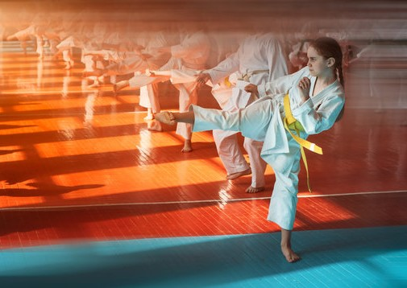

A little about Hela
Public speaking
I know nervousness is normal. but knowing my audience and the purpose I have to spoken is the key to build my ability of speaking in front of many people with self confidence and esteem
In speaking I let my whole inner personality take control of me and I managed to speak every thing in my mind with humor and effective language.

Taekwondo
I had been practicing some Taekwondo moves few years ago,and I have a yellow belt.
It helps me to get a flexible body ,a grater self discipline and enhance the ability to concentrate and focus
on the things in my day to day life.
photography
taking pictures is my hobby I have a passion of taking creative photographs of different things in my surroundings. and I have a great experience of taking professional photographs. and I work it
as my part time satisfactory doing.
see Gallery
Spiders
Spiders are my biggest fear since i was a child. Don't worry I won't put a picture of a it 😉 I have an extreme shock when dealing with them. And I triggered arachnophobia which is an exaggerated
fear of Spiders.